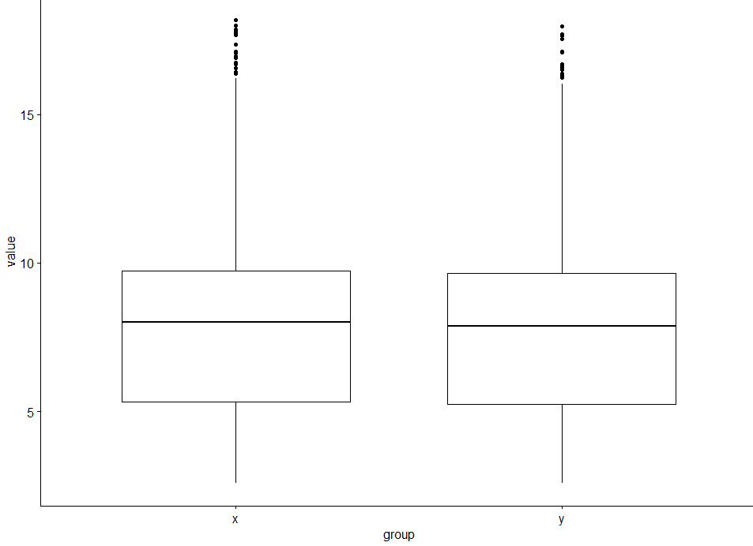
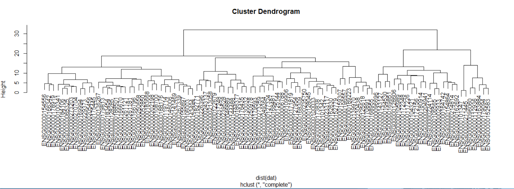
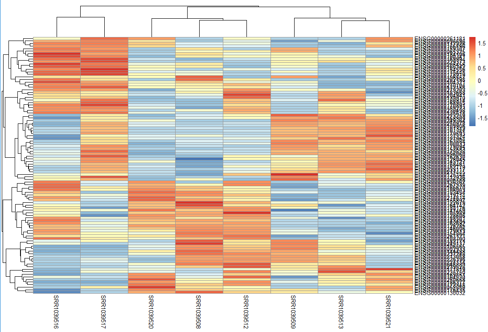

憨憨地承认这篇文章大量引用jimmy老师博客
憨憨.jpg
基础概念
需要掌握R内置数据集及R包数据集
- 内置数据集：https://mp.weixin.qq.com/s/dZPbCXccTzuj0KkOL7R31g
- airway 数据集 https://mp.weixin.qq.com/s/FTdOyxvlS4L-zL3inHTtZg
理解 定性变量（qualitative variable） 和 定量变量(quantitative variable)
定量数据的集中趋势指标主要是：众数、分位数和平均数
定量数据的离散趋势指标主要是：极差，方差和标准差，标准分数，相对离散系数（变异系数），偏态系数与峰态系数
Q1: 载入R中自带的数据集 iris，指出其每列是定性还是定量数据
第1-4列为定量数据，第5列为定性数据
1 | data("iris") |
1 | 'data.frame': 150 obs. of 5 variables: |
Q2: 对数据集 iris的所有定量数据列计算集中趋势指标：众数、分位数和平均数
1 | data=iris[,1:4] |
第三列有两个众数
1 | [1] "the mode is 5" |
1 | # 分位数和平均数 |
1 | Sepal.Length Sepal.Width Petal.Length Petal.Width |
Q3:对数据集 iris的所有定性数据列计算水平及频次
1 | > table(iris[,5]) |
Q4:对数据集 iris的所有定量数据列计算离散趋势指标：方差和标准差等
1 | > apply(data, 2, var) |
Q5:计算数据集 iris的前两列变量的相关性，提示cor函数可以选择3种methods
1 | > cor(iris[,1:2],method ="pearson" ) |
Q6:对数据集iris的所有定量数据列内部zcore标准化，并计算标准化后每列的平均值和标准差
1 | > newdata<-apply(data, 2, scale) |
将每一列标准化为均值为0，标准差为1的数据
Q7:计算列内部zcore标准化后 iris的前两列变量的相关性
1 | > cor(newdata[,1:2],method ="pearson" ) |
与Q5对比，标准化前后相关性不发生改变
Q8: 根据数据集 iris的第五列拆分数据集后重复上面的Q2到Q7问题
1 | > data("iris") |
发现两列有正相关性，相比之前接近于0的相关性。
1 | > # 6 |
Q9:载入R中自带的数据集 mtcars，重复上面的Q1到Q7个问题
Q10: 载入r包airway并且通过assay函数拿到其表达矩阵后计算每列之间的相关性
方法同样，可以看看airway这个数据集。
1 | > rm(list=ls()) |
表达矩阵相关
首先了解各种统计分布：https://mp.weixin.qq.com/s/uly4jlQomk9LZlHyknkNdg 在R语言的实现方式。
Q1: 把RNAseq_expr第一列全部加1后取log2后计算平均值和标准差
1 | tmp=log2(RNAseq_expr[,1]+1)# 记得 +1 哦，因为很多是0 |
Q2: 根据上一步得到平均值和标准差生成同样个数的随机的正态分布数值
1 | a=rnorm(length(tmp),mean = mean(tmp),sd = sd(tmp)) |
Q3: 删除RNAseq_expr第一列低于5的数据后，重复Q1和Q2
1 | tmp=RNAseq_expr[,1] |
Q4: 基于Q3对RNAseq_expr的第一列和第二列进行T检验
1 | x=RNAseq_expr[,1] |
若取$\alpha=0.05$来作为显著性水平，那么两列数据有显著性不同。
1 | Welch Two Sample t-test |
1 | library(ggpubr) |

Q5: 取RNAseq_expr行之和最大的那一行根据分组矩阵进行T检验
1 | pos=which.max(rowSums(RNAseq_expr)) |
Q6: 取RNAseq_expr的MAD最大的那一行根据分组矩阵进行T检验
对于单变量数据集$X=(X_1,X_2,…,X_n)$ ，MAD(Median Absolute Deviation)定义为数据点到中位数的绝对偏差的中位数：
$$MAD=median(|X_i-median(X)|)$$
1 | pos=which.max(apply(RNAseq_expr,1,mad)) |
Q7: 对RNAseq_expr全部加1后取log2后重复Q5和Q6
1 | RNAseq_expr=log2(RNAseq_expr+1) |
看看是不是基因变化了，统计结果也变化了
A：是的！而且，mad表示的是一个基因在不同样本中变化的情况，而mad大的基因也未必有显著差异，在前一问中p值比较大，这问中p值就小了有显著性差异。
Q8: 取RNAseq_expr矩阵的MAD最高的100行，对列和行分别进行层次聚类
Hierarchical Clustering: Hierarchical cluster analysis on a set of dissimilarities and methods for analyzing it.
hclust(d, method = “complete”, members = NULL)
d: a dissimilarity structure as produced by dist.
1 | cg=names(tail(sort(apply(RNAseq_expr,1,mad)),100)) |
检查一下聚类结果跟样本的处理信息是否能对应

Q9: 取RNAseq_expr矩阵的SD最高的100行，对列和行分别进行层次聚类
将Q8中的mad改为sd即可
Q10: 对Q8矩阵按照行和列分别归一化并且热图可视化
scale: scale is generic function whose default method centers and/or scales the columns of a numeric matrix.
1 | cg=names(tail(sort(apply(RNAseq_expr,1,mad)),100)) |

统计检验相关
这里需要对前面的RNAseq_expr矩阵进行一定程度的过滤，主要是过滤那些每一列都为0的行。
1 | e1=RNAseq_expr[apply(RNAseq_expr,1,function(x) sum(x>0)>1),] |
上面的 e1 矩阵下面的习题就用得到。
Q1: 对e1每一行独立根据分组矩阵进行T检验，检查为什么有些行T检验失败
1 | apply(e1, 1, function(x){ |
1 | Error in t.test.default(x = c(SRR1039509 = 1L, SRR1039513 = 1L, SRR1039517 = 1L, : |
Q2: 找出T检验失败的行并且从e1矩阵剔除掉
1 | e1_a=e1[,RNAseq_gl=='trt'] |
注意什么时候可以应用t检验，以下同样失败
1 | bl <- c(140, 138, 150, 148, 135) |
So this means that as far as statistics go, there’s no need for fancy t.test and its a certainty that for each subject there would be a -2 reduction in the fu compared to the bl?
Q3: 对过滤后的e1矩阵进行每一行独立根据分组矩阵进行T检验
1 | apply(e1, 1, function(x){ |
成功
Q4: 对e1矩阵进行加1后log2的归一化命名为e2再对每一行独立根据分组矩阵进行T检验
1 | e2=log2(e1+1) |
Q5: 对e1,e2的T检验P值做相关性分析
1 | p1=apply(e1, 1, function(x){ |
如果生物信息学领域，这样的简单T检验是有很多不合理的地方，比如文库大小，比如基因表达量分布等等。